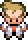
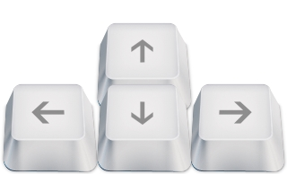
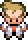

Instructions
Hi! Thanks for playing my short little game! The goal of the game is to retrieve several important items for  and return them to him.
Controls
Movement
Interact/Get Hint
Save Current Game State
Reset
Hi! Thanks for playing my short little game! The goal of the game is to retrieve several important items for  and return them to him.
Movement
Interact/Get Hint
Save Current Game State
Reset